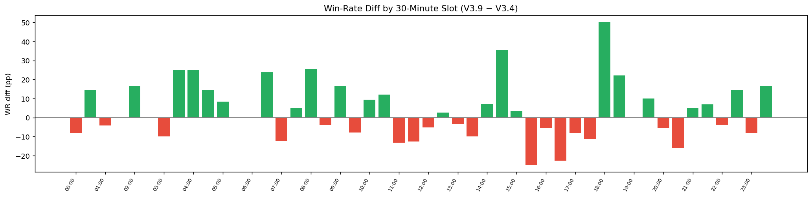
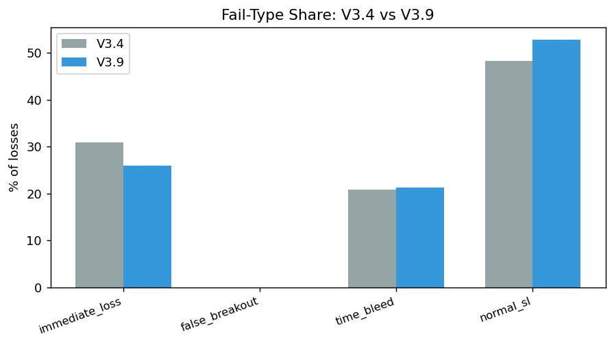
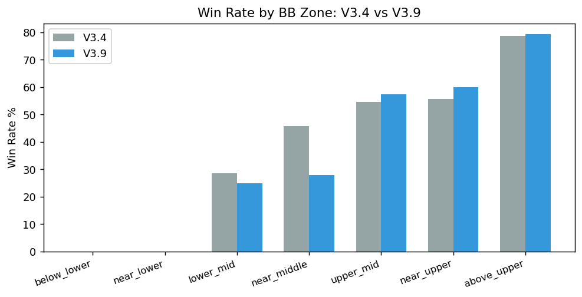
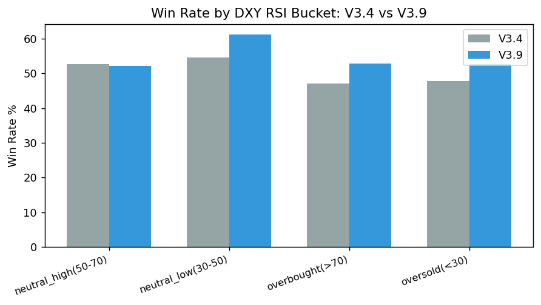
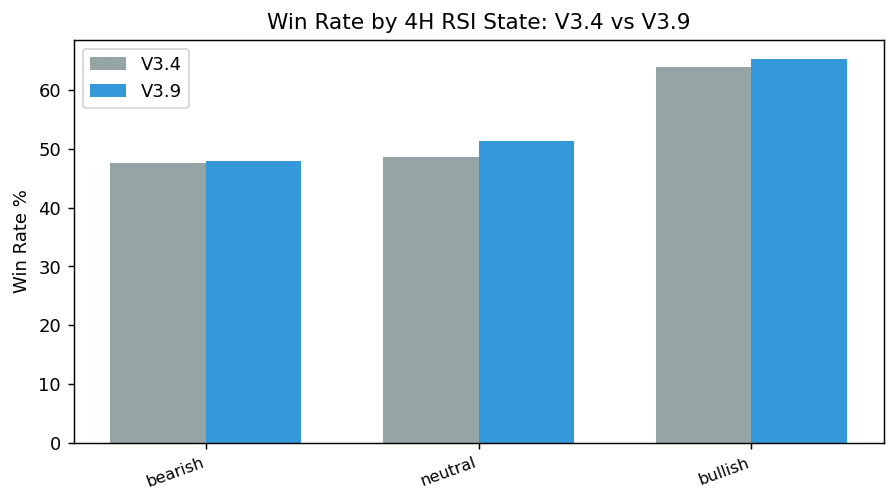

WR +3.05pp (56.22% vs 53.17%), PF +0.344 (1.869 vs 1.525), despite 54 fewer trades over a similar span.
V3.4 WR / PF
53.17% / 1.525
V3.9 WR / PF
56.22% / 1.869
WR diff (V3.9−V3.4)
+3.05pp
PF diff (V3.9−V3.4)
+0.344
V3.4 used 0.5% SL with TP2=2R; V3.9's exit structure differs. Deltas may reflect exit-rule changes, not only timing/regime differences.
Key findings
immediate_loss fell from 30.9% of V3.4 losses to 25.9% of V3.9 losses; normal_sl rose from 48.3% to 52.8%. Consistent with fewer instantly-wrong entries under V3.9.
The 4H-bearish counter-trend win-rate gap grew from 9.6pp (V3.4) to 12.25pp (V3.9) versus aligned entries — V3.9 did not fix this, it got more pronounced.
Most slots have single-digit-to-teens counts per version; treat the per-slot diff chart as descriptive, not as a basis for a new timing rule.
V3.4 used 0.5% SL with TP2=2R; V3.9's exit structure differs. None of these deltas isolate a pure timing/regime effect.
Impact on practice
No active policy change. Research/publication only for this study.
Version Comparison





30-minute entry-slot comparison
Asia/Taipei bar-start time. Both versions computed with the same deterministic method; most cells are low-n for both versions and differences should be read as descriptive, not as a stable timing edge.
| 30m slot | V3.4 n | V3.4 WR | V3.4 PF | V3.9 n | V3.9 WR | V3.9 PF | WR diff (V3.9−V3.4) |
|---|---|---|---|---|---|---|---|
| 00:00 | 8 | 75.0% | 4.798 | 6 | 66.67% | 2.257 | -8.33pp |
| 00:30 | 6 | 50.0% | 1.81 | 14 | 64.29% | 2.79 | +14.29pp |
| 01:00 | 6 | 66.67% | 5.243 | 8 | 62.5% | 4.673 | -4.17pp |
| 01:30 | 8 | 50.0% | 1.007 | 8 | 50.0% | 1.902 | +0.00pp |
| 02:00 | 12 | 50.0% | 1.415 | 12 | 66.67% | 4.131 | +16.67pp |
| 02:30 | 10 | 50.0% | 1.515 | 10 | 50.0% | 0.873 | +0.00pp |
| 03:00 | 5 | 60.0% | 1.498 | 6 | 50.0% | 1.847 | -10.00pp |
| 03:30 | 8 | 50.0% | 1.5 | 8 | 75.0% | 3.048 | +25.00pp |
| 04:00 | 2 | 50.0% | 1.011 | 4 | 75.0% | 5.548 | +25.00pp |
| 04:30 | 10 | 30.0% | 0.425 | 9 | 44.44% | 0.804 | +14.44pp |
| 05:00 | 8 | 75.0% | 2.997 | 6 | 83.33% | 4.949 | +8.33pp |
| 05:30 | 0 | — | — | 2 | 100.0% | — | — |
| 06:00 | 1 | 0.0% | 0.0 | 0 | — | — | — |
| 06:30 | 6 | 33.33% | 0.501 | 7 | 57.14% | 1.371 | +23.81pp |
| 07:00 | 8 | 87.5% | 11.748 | 4 | 75.0% | 7.899 | -12.50pp |
| 07:30 | 23 | 52.17% | 1.996 | 14 | 57.14% | 2.614 | +4.97pp |
| 08:00 | 21 | 52.38% | 1.344 | 9 | 77.78% | 4.756 | +25.40pp |
| 08:30 | 18 | 61.11% | 1.937 | 7 | 57.14% | 2.184 | -3.97pp |
| 09:00 | 21 | 47.62% | 0.893 | 14 | 64.29% | 1.892 | +16.67pp |
| 09:30 | 17 | 41.18% | 0.735 | 15 | 33.33% | 0.496 | -7.85pp |
| 10:00 | 24 | 54.17% | 1.674 | 11 | 63.64% | 3.186 | +9.47pp |
| 10:30 | 11 | 54.55% | 1.854 | 9 | 66.67% | 2.031 | +12.12pp |
| 11:00 | 6 | 83.33% | 4.992 | 10 | 70.0% | 2.328 | -13.33pp |
| 11:30 | 14 | 57.14% | 1.742 | 9 | 44.44% | 1.298 | -12.70pp |
| 12:00 | 11 | 63.64% | 2.035 | 12 | 58.33% | 2.074 | -5.31pp |
| 12:30 | 10 | 60.0% | 2.14 | 8 | 62.5% | 2.539 | +2.50pp |
| 13:00 | 10 | 40.0% | 0.644 | 11 | 36.36% | 0.573 | -3.64pp |
| 13:30 | 2 | 50.0% | 0.989 | 5 | 40.0% | 1.813 | -10.00pp |
| 14:00 | 14 | 42.86% | 1.236 | 6 | 50.0% | 2.309 | +7.14pp |
| 14:30 | 9 | 44.44% | 0.875 | 10 | 80.0% | 4.651 | +35.56pp |
| 15:00 | 10 | 30.0% | 0.426 | 6 | 33.33% | 0.498 | +3.33pp |
| 15:30 | 9 | 66.67% | 2.258 | 12 | 41.67% | 1.309 | -25.00pp |
| 16:00 | 9 | 55.56% | 1.254 | 8 | 50.0% | 2.292 | -5.56pp |
| 16:30 | 11 | 72.73% | 4.505 | 12 | 50.0% | 1.907 | -22.73pp |
| 17:00 | 12 | 58.33% | 2.877 | 6 | 50.0% | 1.856 | -8.33pp |
| 17:30 | 6 | 66.67% | 2.006 | 9 | 55.56% | 1.593 | -11.11pp |
| 18:00 | 6 | 50.0% | 0.829 | 2 | 100.0% | — | +50.00pp |
| 18:30 | 9 | 77.78% | 7.529 | 8 | 100.0% | — | +22.22pp |
| 19:00 | 11 | 45.45% | 1.334 | 11 | 45.45% | 1.253 | +0.00pp |
| 19:30 | 10 | 30.0% | 0.913 | 5 | 40.0% | 0.672 | +10.00pp |
| 20:00 | 10 | 50.0% | 1.004 | 9 | 44.44% | 1.297 | -5.56pp |
| 20:30 | 13 | 46.15% | 0.845 | 10 | 30.0% | 0.433 | -16.15pp |
| 21:00 | 14 | 57.14% | 1.219 | 21 | 61.9% | 1.682 | +4.76pp |
| 21:30 | 16 | 37.5% | 0.595 | 18 | 44.44% | 0.783 | +6.94pp |
| 22:00 | 20 | 60.0% | 2.519 | 16 | 56.25% | 2.096 | -3.75pp |
| 22:30 | 11 | 45.45% | 0.838 | 15 | 60.0% | 2.017 | +14.55pp |
| 23:00 | 14 | 64.29% | 1.651 | 16 | 56.25% | 1.284 | -8.04pp |
| 23:30 | 4 | 25.0% | 0.338 | 12 | 41.67% | 0.711 | +16.67pp |
Fail-Type Share
| fail_type | V3.4 | V3.9 | diff |
|---|---|---|---|
| immediate_loss | 30.9% | 25.9% | -5.0pp |
| false_breakout | 0% | 0% | +0.0pp |
| time_bleed | 20.8% | 21.3% | +0.5pp |
| normal_sl | 48.3% | 52.8% | +4.5pp |
Method and evidence boundary
V3.4 and V3.9 differ in exit-rule structure (0.5% SL / TP2=2R vs V3.9's current exit rules) and in which market regime each was traded in, so deltas are expected and must not be read as a like-for-like backtest of the same rules across time.
reads RS-XAUUSD-20260727-003 and RS-XAUUSD-20260727-004 results.json; recomputes no fail-pattern classification
Raw CSV and private decision conversations remain in trading-private. This public page contains reviewed aggregate results, charts, and the reproducible method only.